Azure Networking Specialty Daily Interactive Study Report
Current certification alignment: Microsoft Certified: Azure Network Engineer Associate remains active; the current AZ-700 study guide measures skills as of July 27, 2026. Today’s material emphasizes implementation and operational evidence rather than repeating product overviews.
Today’s 12 lessons
- ExpressRoute cross-subscription authorization
- ExpressRoute connection routing weight
- VPN Gateway packet capture as a fault-isolation tool
- VNet peering address-space resize and synchronization
- Azure Virtual Network Manager UDR management
- Application Gateway Private Link
- Front Door origin health and session affinity
- Traffic Manager Linked Records
- Private Endpoint subnet network policies
- Azure Firewall IP Groups at scale
- Public IP routing preference
- Load Balancer TCP reset and idle timeout
ExpressRoute cross-subscription authorization: share a circuit without sharing ownership
Why it matters
Large Azure estates rarely keep every workload in the same subscription as the connectivity resources. A central network team might own a single ExpressRoute circuit while application teams own virtual network gateways in separate subscriptions or even separate Microsoft Entra tenants. ExpressRoute authorizations solve that ownership boundary. The circuit owner creates a time-independent authorization object that exposes a key; the circuit user redeems that authorization when creating the ExpressRoute connection from their gateway. The user does not receive broad control over the circuit itself, and the owner does not need ownership of the workload subscription.
The practical value is governance. The circuit owner controls who is allowed to consume the private WAN, and can revoke that authorization later. Billing for the dedicated circuit remains with the circuit owner, while every connected VNet shares the circuit’s bandwidth. This makes authorization an administrative control, not a bandwidth partition. A design that grants ten application subscriptions access to one 10-Gbps circuit still has one 10-Gbps service envelope; the authorization keys do not reserve capacity per tenant.
Architecture
On the owner side, the ExpressRoute circuit is the authoritative resource. An authorization belongs to that circuit and has an authorization key plus a resource identifier. On the user side, the ExpressRoute virtual network gateway belongs to the workload VNet. The connection object is created in the gateway’s subscription and references the owner’s circuit plus the authorization. After redemption, the gateway participates in the circuit’s private peering data path even though the resources live under different subscriptions.
The control-plane sequence is important: create authorization, pass the key and circuit resource ID securely to the user, create or update the gateway connection, then verify that the connection has consumed the authorization. The data plane is ordinary ExpressRoute private-peering forwarding after the connection is established. Authorization does not change BGP attributes, route preference, FastPath behavior, or security filtering; it only permits the cross-subscription linkage.
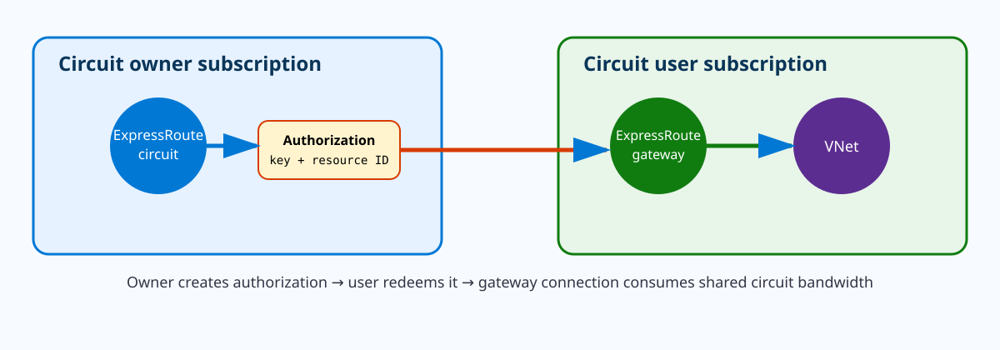
{kind=link}
Prerequisites and implementation
The circuit and consuming VNet must be in the same Azure cloud; Microsoft documents that this mechanism does not connect sovereign-cloud VNets to global Azure circuits. The consumer needs an ExpressRoute virtual network gateway that is ready to link. The owner needs permissions that include Microsoft.Network/expressRouteCircuits/authorizations read/write/delete. “Circuit owner” in the documentation is a responsibility description, not a special built-in Azure role.
# Circuit owner subscription
az account set --subscription <circuit-owner-subscription>
az network express-route auth create \
--resource-group <er-rg> \
--circuit-name <er-circuit> \
--name app-team-auth
az network express-route auth show \
--resource-group <er-rg> \
--circuit-name <er-circuit> \
--name app-team-auth \
--query "{key:authorizationKey,state:authorizationUseStatus,id:id}" -o json
# Circuit user subscription
az account set --subscription <workload-subscription>
az network vpn-connection create \
--name <er-connection> \
--resource-group <workload-rg> \
--vnet-gateway <expressroute-gateway> \
--express-route-circuit <full-circuit-resource-id> \
--authorization-key <authorization-key>The command group still uses az network vpn-connection for both VPN and ExpressRoute gateway connection objects, so do not let the command name mislead you. The decisive parameters are the ExpressRoute circuit reference and the authorization key.
Revocation behavior
Revocation is operationally powerful and potentially disruptive. Microsoft documents that revoking an authorization deletes link connections created from the revoked access. Treat it like removing a routing attachment, not like merely invalidating a future invitation. In a production change process, identify every connection consuming the authorization before deleting it, confirm whether the workload has alternate connectivity, and schedule revocation with the same caution as an ExpressRoute circuit-link change.
Authorization lifecycle and operational ownership
An authorization should have the same lifecycle discipline as any other privileged connectivity object. Give it a name that identifies the consuming subscription or service, record who approved it, and avoid sending the key through a broad ticket or chat channel because possession of the key plus the circuit resource ID is what lets the consumer redeem the connection. Once an authorization is consumed, retain the relationship between that authorization name and the gateway connection in inventory. This becomes especially important when a central circuit carries dozens of VNets: an owner preparing to revoke an old authorization must be able to determine exactly which connection will disappear.
Cross-tenant use also changes troubleshooting ownership. The circuit team can prove that private peering and the circuit are healthy, while the workload team can prove that its ExpressRoute gateway is provisioned; neither fact alone proves the cross-subscription connection is valid. Establish a handoff checklist that includes the circuit resource ID, authorization status, gateway resource ID, connection status, and learned prefixes. For least privilege, the consumer does not need write access to the circuit after redemption. Conversely, the circuit owner does not need permission to configure subnets or workloads in the consuming subscription. Preserving that separation is one of the principal architectural benefits of authorization rather than granting broad cross-subscription RBAC.
Verification
az network express-route auth show -g <er-rg> --circuit-name <er-circuit> \
-n app-team-auth -o jsonc
az network vpn-connection show -g <workload-rg> -n <er-connection> \
--query "{provisioning:provisioningState,status:connectionStatus,routingWeight:routingWeight}" -o json{
"provisioning": "Succeeded",
"status": "Connected",
"routingWeight": 0
}
Authorization use status: UsedSucceeded proves the Azure resource deployed; Connected proves the gateway connection is operational. Verify route learning from a workload NIC or on-premises router as a separate data-plane check.
Troubleshooting
az network express-route auth show -g <er-rg> --circuit-name <er-circuit> -n app-team-auth
az network vpn-connection show -g <workload-rg> -n <er-connection> -o jsoncauthorizationUseStatus: Used
connection provisioningState: Failed
connectionStatus: UnknownIf the authorization is already marked Used, trying to redeem it for another VNet is the wrong fix; create a new authorization for the additional connection. If the key is NotUsed but the connection creation fails, confirm the exact circuit resource ID, cloud boundary, gateway type, subscription context, and RBAC. If a previously working link vanishes immediately after an owner-side change, check whether the authorization was revoked before touching BGP policy.
ExpressRoute connection routing weight: choose the Azure-to-on-premises circuit for equal prefixes
Why it matters
When one Azure VNet is connected to more than one ExpressRoute circuit, the gateway can learn the same on-premises prefix through multiple circuit connections. Engineers often jump immediately to on-premises BGP attributes, but Azure exposes a connection-level property called RoutingWeight that influences which ExpressRoute connection Azure uses when the same prefix is available from more than one circuit. The connection with the higher routing weight is preferred. Microsoft documents a range of 0 through 32000 and a default of 0.
This is an Azure-side egress preference from the virtual network gateway toward on-premises. It is not the same as BGP local preference on your routers, and it does not control the return direction from the datacenter to Azure. A symmetric primary/backup design therefore normally needs deliberate policy on both sides: routing weight can influence Azure’s outbound selection, while your WAN BGP policy controls which path on-premises prefers toward Azure prefixes.
Architecture
The VNet’s ExpressRoute gateway has separate connection resources to Circuit A and Circuit B. Both circuits can carry private peering routes. If 10.50.0.0/16 arrives over both connections and all else is eligible, setting Circuit A’s connection weight to 200 and Circuit B’s to 100 tells the gateway to prefer A for traffic toward that prefix. The circuits themselves remain independent failure domains; changing the weight does not merge their bandwidth or BGP sessions.
Connection weighting belongs to the control plane. The data plane is still destination-prefix forwarding after the gateway selects a usable route. If Circuit A loses the prefix entirely, a lower-weight path through Circuit B can become active. That distinction is why a failover test must validate both route availability and workload traffic rather than only reading the configured weight.
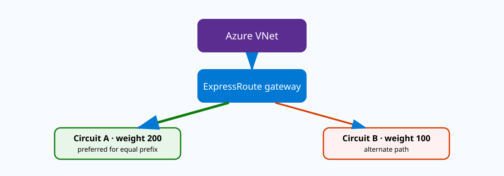
{kind=link}
Prerequisites and implementation
You need a VNet gateway connected to at least two ExpressRoute circuits that can advertise overlapping destination prefixes. Before changing weights, capture the current effective path with a real flow and record the BGP advertisements on both circuits. If only one circuit carries the prefix, changing weights cannot manufacture a second route.
# Prefer Circuit A connection
az network vpn-connection update \
--resource-group <gateway-rg> \
--name <connection-to-circuit-a> \
--routing-weight 200
# Keep Circuit B as lower-preference alternate
az network vpn-connection update \
--resource-group <gateway-rg> \
--name <connection-to-circuit-b> \
--routing-weight 100
az network vpn-connection list -g <gateway-rg> \
--query "[].{name:name,status:connectionStatus,weight:routingWeight}" -o tableFailure and return-path design
Routing weight is most useful when the two circuits are both healthy but you want one to be primary for a set of equal prefixes. It should not become a substitute for actual resiliency. If the secondary circuit advertises only a subset of production prefixes, or its carrier path lacks capacity, a weight value of 100 does not make it a valid backup. Likewise, if an on-premises firewall sees outbound sessions on Circuit A but return traffic arrives through Circuit B, stateful inspection can fail even though the Azure route preference is working exactly as configured.
For maintenance, temporarily increasing the alternate connection weight can be a controlled way to steer Azure-originated traffic before shutting a circuit, but observe existing long-lived flows. Route preference changes affect route selection; they do not guarantee graceful connection migration for stateful TCP sessions already traversing devices that maintain state.
Weight versus BGP attributes and ECMP
Routing weight belongs to the Azure virtual-network connection object, so it is evaluated in a different administrative domain from BGP attributes learned over the ExpressRoute peering. Microsoft explicitly notes that connection weight is considered before AS-path length for VNet-to-on-premises selection. That matters when engineers try to make a remote circuit less attractive only by prepending their on-premises ASN: a higher Azure connection weight on that circuit can still produce the opposite of the intended path. Treat the weight and the advertised BGP attributes as one policy system and document which mechanism owns each direction.
Equal weights also deserve testing. When multiple eligible paths remain equivalent, Azure can use equal-cost routing behavior depending on the topology. That may be desirable for active/active bandwidth use but dangerous if the on-premises side contains stateful firewalls whose sessions are not synchronized. If the business requirement is deterministic primary/backup, give the connections deliberately different weights and make the CE return preference match. If the requirement is active/active, test many flows rather than a single ping because hashing behavior is visible only across multiple tuples. During maintenance, record the old weight before changing it, wait for route convergence, and confirm new flows follow the expected circuit before withdrawing the old path. Restore the original weight after the maintenance event instead of leaving a temporary routing preference as undocumented technical debt.
Verification
az network vpn-connection show -g <gateway-rg> -n <connection-to-circuit-a> \
--query "{status:connectionStatus,weight:routingWeight,provisioning:provisioningState}" -o json
az network vpn-connection show -g <gateway-rg> -n <connection-to-circuit-b> \
--query "{status:connectionStatus,weight:routingWeight,provisioning:provisioningState}" -o jsonCircuit A connection: {"status":"Connected","weight":200,"provisioning":"Succeeded"}
Circuit B connection: {"status":"Connected","weight":100,"provisioning":"Succeeded"}
Traffic test from Azure to 10.50.10.10:
observed on Circuit A / primary CEThe configured weights and both Connected states prove the intended control-plane condition. The observed WAN path proves the forwarding decision.
Troubleshooting
Connection A weight: 200, status: Connected
Connection B weight: 100, status: Connected
On-prem prefix 10.50.0.0/16 advertised only on Circuit BThe traffic correctly uses B because there is no competing A route to weight. Fix the missing advertisement/peering issue rather than increasing the weight. If Azure egress uses A but return traffic still uses B, inspect the on-premises BGP policy separately; routing weight does not program your CE routers.
VPN Gateway packet capture: prove where the tunnel or application flow fails
Why it matters
Site-to-site VPN incidents are difficult because a single user-visible timeout can originate at several layers: the on-premises route, IKE negotiation, IPsec selectors, NAT, Azure gateway forwarding, VNet routing, or the destination workload. Azure VPN Gateway packet capture gives you packet-level evidence at the managed gateway without deploying a packet sniffer VM inline. It is especially useful when the on-premises firewall team can show packets leaving their interface but you need to determine whether Azure receives the encapsulated traffic or emits the decrypted inner flow.
The feature is not a replacement for all diagnostics. A capture records traffic observed at the gateway; it does not explain why an NSG later denies a packet, and it does not expose application behavior on the VM. Its strength is narrowing the fault domain. Once you know whether the relevant packet enters or leaves the gateway, you can choose the next tool intelligently instead of changing VPN proposals or routes by trial and error.
Architecture
There are two useful perspectives. On the outside of the tunnel, you care about IKE/IPsec traffic between the public or private VPN peer endpoints. On the inside, you care about the original source and destination addresses after decryption. A well-designed capture filter minimizes noise so the resulting file answers one question, such as “Do encrypted packets from peer 198.51.100.10 reach Azure?” or “Does decrypted TCP/443 traffic for 10.20.1.10 → 10.50.2.20 leave the VPN gateway toward the VNet?”
Because VPN Gateway is managed infrastructure, you start and stop capture through the supported Azure control surface rather than logging into the gateway OS. Captures should be bounded in time and scope. On a busy gateway, an unfiltered capture can become difficult to interpret and can collect traffic unrelated to the incident.
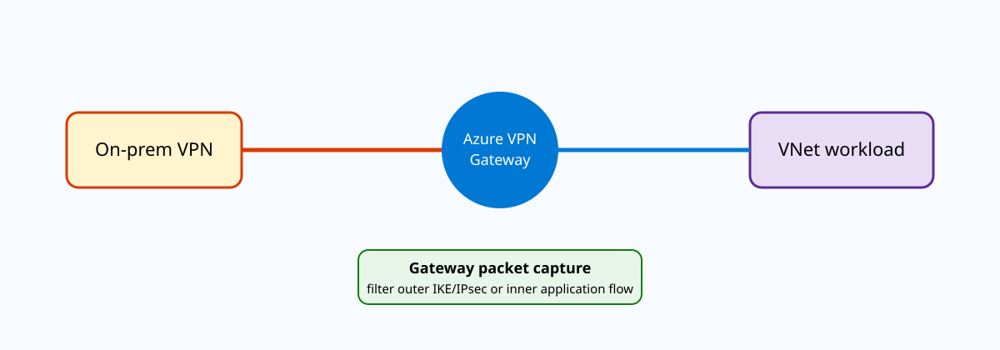
{kind=link}
Prerequisites and implementation
Use packet capture after basic resource health is known, not as the first command for every outage. Confirm the gateway connection exists and capture the exact peer IPs, inner prefixes, protocol, and port involved. Microsoft’s VPN Gateway capture workflow is currently documented primarily through the portal and Azure PowerShell. When a direct Azure CLI start/stop command is not available in the supported surface, do not invent one; use the documented PowerShell operation and use Azure CLI for surrounding connection-state verification.
# Azure CLI: establish baseline connection state first
az network vpn-connection show \
--resource-group <rg> \
--name <s2s-connection> \
--query "{status:connectionStatus,ingress:ingressBytesTransferred,egress:egressBytesTransferred}" -o json
# PowerShell: use the current Microsoft-documented VPN Gateway
# Start-AzVirtualnetworkGatewayPacketCapture / Stop-... workflow.
# Apply a filter for the exact peer or inner flow and export to a secure location.Before starting capture, generate a reproducible test from one known source to one known destination. Record timestamps. If you are testing intermittent rekeys, keep the window long enough to include the expected event but still filter narrowly.
How to read the evidence
If the on-premises firewall shows IKE packets leaving but the Azure-side capture never sees them, focus on the path between peers: public routing, NAT device, upstream ACL, or wrong Azure peer address. If the capture shows bidirectional IKE but no ESP or UDP-encapsulated IPsec after negotiation, inspect proposals, authentication, selectors, and NAT-T behavior. If encrypted packets arrive and inner packets appear toward the VNet, the tunnel is doing its job; shift the investigation to effective routes, NSG policy, NVA inspection, and the destination host.
For one-way application failures, compare forward and return inner flows. Seeing 10.20.1.10 → 10.50.2.20 enter Azure with no reverse 10.50.2.20 → 10.20.1.10 points away from IKE and toward Azure-side or application return-path issues. Seeing the return flow reach the gateway but not the on-premises peer points back to encryption, selector, or outer-path problems.
Capture design: outer tunnel versus inner payload
A packet capture is most valuable when the filter reflects the exact hypothesis being tested. For an IKE-establishment problem, filter around the peer addresses and UDP 500/4500 so you can distinguish no arrival, one-way negotiation, and bidirectional exchange. For an application problem on an already-established tunnel, use the inner source and destination prefixes and application port. Mixing both questions in one broad capture produces a large trace but often less certainty. Record the test start and stop timestamps and run one controlled connection attempt while the capture is active.
NAT changes what you should expect to see. If VPN Gateway NAT translates an overlapping branch prefix before the packet enters the VNet, the inner packet on the Azure side can carry the translated address rather than the branch’s original address. Compare the configured NAT rules with the capture before concluding that a source address is unexpected. The same principle applies to NAT-T: seeing UDP 4500 rather than native ESP is normal when NAT traversal is in use. Finally, protect capture artifacts as operational data. Even when IPsec encrypts the outer transport, a capture point that exposes decrypted inner packets can reveal internal addressing, ports, and potentially payload. Store captures only as long as required for the incident and use a restricted storage destination.
Verification
az network vpn-connection show -g <rg> -n <s2s-connection> \
--query "{status:connectionStatus,ingress:ingressBytesTransferred,egress:egressBytesTransferred}" -o json{
"status": "Connected",
"ingress": 48230122,
"egress": 47799108
}
Capture during test:
198.51.100.10 -> Azure-peer : IKE/IPsec packets present
10.20.1.10 -> 10.50.2.20 : decrypted TCP SYN present
10.50.2.20 -> 10.20.1.10 : SYN/ACK presentIncreasing byte counters plus a complete inner handshake is strong evidence that the gateway and tunnel path are healthy for that flow.
Troubleshooting
connectionStatus: NotConnected
On-prem firewall: IKE_SA_INIT transmitted repeatedly
Azure gateway capture: no packets from peer public IPDo not change DH groups yet; Azure is not seeing the negotiation. Validate destination peer IP, upstream NAT/firewall, and Internet/private underlay reachability. Failure B: Azure capture shows the decrypted SYN leaving the gateway but no return packet. At that point inspect the destination NIC effective routes and NSG, plus the host listener. The capture has already cleared the VPN crypto layer for the forward direction.
VNet peering resize and sync: change address space without leaving peers on stale routes
Why it matters
Azure supports resizing the address space of virtual networks that are already peered. You can add a prefix, remove one, or modify an existing address range without tearing down the peering or interrupting traffic that still uses unchanged prefixes. The subtle operational requirement is synchronization: after the address-space change, each peer must refresh its view of the remote VNet. A peering can remain in Connected state while still showing stale remoteAddressSpace values and therefore missing routes for the new prefix.
This feature matters during real growth. An application team may add 10.21.0.0/16 to a VNet that originally used only 10.20.0.0/16, deploy a new subnet, and discover that hosts in a peered services VNet cannot reach it. Recreating peering is unnecessary and disruptive. The correct operation is to sync the peering after the resize and verify that the remote prefix appears in the peer metadata and effective routes.
Architecture
Each VNet owns its actual address-space object. Each peering also keeps a representation of the remote VNet’s address space that Azure uses to maintain the connectivity relationship. After a resize, the source VNet knows its new ranges immediately, but the existing peering metadata on the other side can require synchronization. The sync operation reconciles the peer’s remote-address-space view with the current VNet configuration.
Resizing supports IPv4 and IPv6 and can work across tenants. Microsoft recommends syncing after every resize operation rather than batching several address changes and syncing later. The feature is not supported when the VNet is peered with a classic virtual network. Also remember that address overlap rules still apply: adding a prefix that overlaps the peer or another connected network can be rejected or create a broader architecture problem even if the sync mechanism itself works.
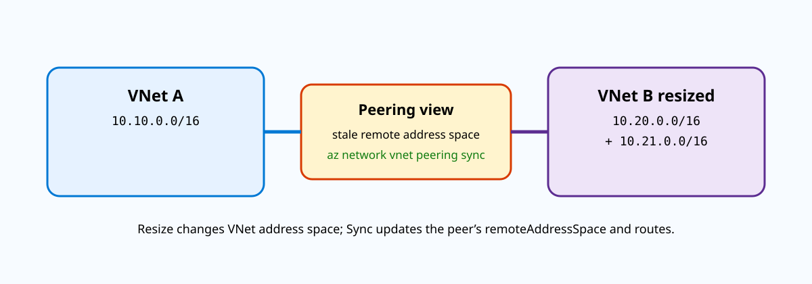
{kind=link}
Prerequisites and implementation
Before resizing, inventory every connected route domain: direct VNet peers, VPN/ExpressRoute prefixes, NVA routes, Private DNS resolver networks, and IPAM allocations. The goal is not merely to find an unused range inside Azure; it is to choose a prefix that remains nonoverlapping across every path the VNet uses.
# Add a new address prefix to VNet B
az network vnet update \
--resource-group <rg-b> \
--name <vnet-b> \
--add addressSpace.addressPrefixes 10.21.0.0/16
# Compare actual VNet B space with VNet A's peering view
az network vnet show -g <rg-b> -n <vnet-b> \
--query "addressSpace.addressPrefixes" -o json
az network vnet peering show -g <rg-a> --vnet-name <vnet-a> \
-n <a-to-b> --query "remoteAddressSpace.addressPrefixes" -o json
# Reconcile the peering metadata
az network vnet peering sync \
--resource-group <rg-a> \
--vnet-name <vnet-a> \
--name <a-to-b>Repeat the synchronization on other peers that need awareness of the resized VNet. After that, create subnets in the new range and validate workload routes.
Route behavior after resize
For a VM in VNet A, the useful evidence is not only the peering object but the NIC effective route table. After synchronization and propagation, a route for 10.21.0.0/16 should appear as a virtual-network/peering route. If the peer metadata is correct but an NVA UDR is more specific or otherwise wins route selection, traffic may still follow the custom path. Peering sync fixes the remote-space knowledge; it does not remove or rewrite your UDR design.
Safe resize sequencing and rollback
Adding an address prefix is usually easier to roll back than shrinking or replacing one. For an expansion, first reserve the new range in enterprise IPAM, add it to the VNet, synchronize every peer, verify that the new route appears, and only then create subnets and workloads inside it. This sequence ensures that no production VM is born into a prefix that its peers have not learned. For a contraction, evacuate workloads and dependent private endpoints before removing the range, because synchronization cannot preserve connectivity to addresses that no longer belong to the VNet.
Large peering meshes make synchronization an inventory problem. If VNet B is peered to ten other VNets, syncing only A-to-B fixes A but leaves nine peers stale. Query the peering list for B, identify every remote peer that carries full-VNet connectivity, and track completion per peer. Cross-tenant peerings also require the operator performing synchronization to have the necessary permissions across the administrative boundary. After sync, test both control-plane metadata and traffic. A correct remoteAddressSpace proves the peer knows the new CIDR; the effective route table proves the NIC has consumed it; an application or TCP probe proves security and host configuration allow the new subnet. Keeping those three checks separate avoids recreating a healthy peering when the actual problem is an NSG or application listener.
Verification
az network vnet peering show -g <rg-a> --vnet-name <vnet-a> -n <a-to-b> \
--query "{state:peeringState,remote:remoteAddressSpace.addressPrefixes}" -o json
az network nic show-effective-route-table -g <rg-a> -n <vm-a-nic> -o table{
"state": "Connected",
"remote": ["10.20.0.0/16", "10.21.0.0/16"]
}
Address Prefix Next Hop Type
10.21.0.0/16 VNetPeeringThat combination shows that the peering has the new range and the workload routing plane has consumed it.
Troubleshooting
Actual VNet B address space:
["10.20.0.0/16","10.21.0.0/16"]
VNet A peering remoteAddressSpace:
["10.20.0.0/16"]
Peering state: ConnectedThis is a synchronization problem, not a reason to delete the peering. Run az network vnet peering sync, then recheck remoteAddressSpace and the NIC effective route table. If the metadata updates but the flow still follows an unexpected NVA, inspect UDR precedence next.
Azure Virtual Network Manager UDR management: describe routing intent once and deploy it to network groups
Why it matters
Traditional Azure UDR operations are resource-by-resource: create route tables, add routes, associate them to subnets, then maintain every copy as topology changes. Azure Virtual Network Manager’s user-defined routing capability moves that work into a centralized intent model. You define a routing configuration, target a network group, add rule collections and routing rules, and deploy the configuration to regions. AVNM then creates or updates the route-table state needed to realize that intent.
This is materially different from Virtual WAN. You are not moving traffic into a Microsoft-managed virtual hub; you are centralizing the management of UDRs across ordinary VNets. That makes the feature useful for estates that want classic hub-and-spoke flexibility—custom NVAs, custom hub VNets, existing peering—but do not want hundreds of individually maintained route tables.
Architecture
The control hierarchy is Network Manager → network group → routing configuration → rule collection → route rule. A network group identifies the VNets or subnets that should receive a class of routing intent. A routing rule describes a destination and next-hop type/address. When the configuration is deployed, Azure creates managed route tables when required, or can work with existing route tables under the newer API behavior documented by Microsoft.
One useful design is central inspection. Put spoke VNets in a network group, create a rule for RFC1918 or Internet destinations, and set the next hop to the hub firewall/NVA. Another is the reverse direction: target a gateway subnet and program routes for all spoke CIDRs through the hub firewall so on-premises traffic is inspected before entering spokes. The important design exercise is to reason about where the UDR is attached and which direction of traffic it actually influences.
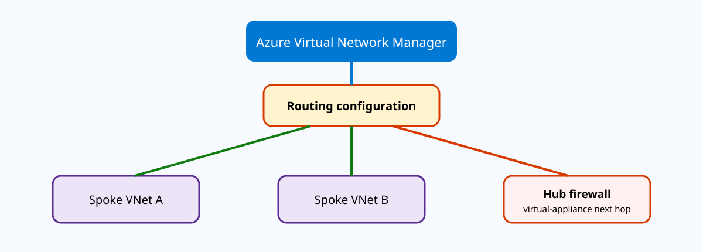
{kind=link}
Prerequisites and implementation
The Network Manager must have the user-defined-routing feature enabled and the operator needs Network Contributor rights at the managed scope. As of the current Microsoft guidance, the principal end-to-end creation walkthrough is portal-based. Do not invent unsupported az network manager routing-config commands. For automation, use the current ARM/Bicep/API resource surface and verify the resulting route tables with Azure CLI. If you choose to integrate existing route tables, Microsoft documents API version 2025-01-01 or later for that mode.
# Build/verify the VNets and network-group members with supported CLI resources.
az network vnet list -g <spoke-rg> -o table
# After deploying the AVNM routing configuration through the documented
# portal/ARM/Bicep/API surface, inspect the route tables Azure created.
az network route-table list -g <avnm-managed-resource-group> -o table
az network route-table route list \
--resource-group <avnm-managed-resource-group> \
--route-table-name <managed-route-table> -o table
# Prove workload consumption.
az network nic show-effective-route-table \
-g <workload-rg> -n <spoke-vm-nic> -o tableThe key implementation artifact is the routing configuration itself, not a hand-created route table. The CLI commands above are verification and inventory because Microsoft’s current how-to centers the new feature configuration in the AVNM control plane.
Conflict behavior you must design around
Do not create conflicting AVNM rules and expect deterministic ordering. Microsoft explicitly warns that conflicting rules within or across collections targeting the same VNet/subnet are unsupported and can be selected at random. If AVNM creates a route with the same destination as a route already present in the route table, the AVNM routing rule can be ignored. That makes predeployment route inventory essential.
AVNM also tries not to destroy unrelated customer UDRs. When it manages a route table, other UDRs can remain. Removing the AVNM configuration removes the routes that AVNM created, not every manually added route. This is operationally convenient, but it also means a “clean” central policy can coexist with old routes that still influence forwarding. Configuration ownership should be visible in your IaC and naming conventions.
Deployment scope, ownership, and drift
AVNM routing configurations are deployed to selected Azure regions, so network-group membership by itself is not the final activation step. A VNet can satisfy the group definition but still lack the intended managed route state if the routing configuration was not deployed to that VNet’s region. Treat the deployment object as a release artifact: record which routing-configuration version was deployed, to which regions, and when. This is particularly important for enterprises that use dynamic network-group membership because a newly tagged VNet can become a member after the original routing design was approved.
Drift management is different from ordinary Terraform-owned route tables. AVNM may create and manage route tables while preserving unrelated customer routes. That coexistence is useful, but it means an engineer can manually add a UDR that changes forwarding even though the centralized configuration still reports successful deployment. Build a periodic audit that compares the effective route on representative NICs with the intended AVNM rule set. For firewall insertion, include both directions in the policy design: spoke-to-hub/default routes may steer egress toward the firewall, while gateway-subnet routes can be required to steer hybrid traffic toward the same inspection point. If only one side is managed, stateful sessions can become asymmetric even though every individual UDR looks reasonable in isolation.
Verification
az network route-table route list -g <managed-rg> --route-table-name <rt> -o table
az network nic show-effective-route-table -g <workload-rg> -n <nic> -o tableName AddressPrefix NextHopType NextHopIpAddress
avnm-default 0.0.0.0/0 VirtualAppliance 10.0.1.4
NIC effective route:
0.0.0.0/0 User VirtualAppliance 10.0.1.4The first command proves AVNM produced route-table state; the second proves the workload NIC actually sees the intended route.
Troubleshooting
AVNM deployment: Succeeded
Managed route table:
0.0.0.0/0 -> 10.0.1.4
NIC effective routes:
0.0.0.0/0 -> InternetThe control-plane deployment succeeded but the target subnet is not consuming the intended table. Check network-group membership, region deployment scope, subnet association, and whether the VNet/subnet was actually targeted. If two rules define the same destination with different next hops, remove the conflict instead of relying on rule order.
Application Gateway Private Link: expose the gateway itself through consumer private endpoints
Why it matters
Application Gateway has long supported private frontend IPs inside its own VNet, but that alone does not give every unrelated VNet, subscription, tenant, or region a simple private attachment model. Application Gateway Private Link adds a service-style access layer: a consumer creates a Private Endpoint in its own VNet and connects to a specific Application Gateway frontend configuration. The gateway can therefore remain centrally managed while consumers use local private IPs and do not require broad VNet peering.
This is different from putting a private endpoint behind Application Gateway. Here the private endpoint points to the Application Gateway frontend itself. All normal gateway features remain available for traffic received through that endpoint. Microsoft also documents that the original client source IP and source port are preserved, and for HTTP/HTTPS the gateway can expose the Private Endpoint connection’s LinkID through X-Azure-PrivateEndpoint-ID and the access-log LinkId field, which is valuable in overlapping-address multitenant designs.
Architecture
Four objects matter: the Application Gateway frontend IP, an Application Gateway Private Link configuration associated with that frontend, a dedicated subnet used by the Private Link configuration, and one or more consumer Private Endpoints. The dedicated Private Link subnet cannot be the Application Gateway subnet. Each IP allocated to the Private Link configuration supports up to 65,536 concurrent TCP connections, Microsoft allows up to eight IP addresses per configuration, and allocation is dynamic.
The frontend must be actively used by a listener before it can appear as the Private Endpoint target subresource. That detail explains a common deployment surprise: engineers create a frontend IP and Private Link configuration, then cannot select it when creating the endpoint because no listener actually references the frontend.
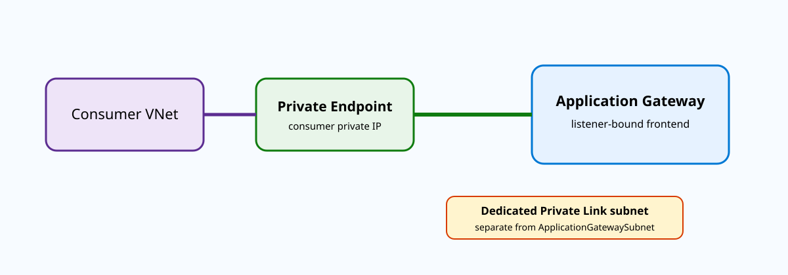
{kind=link}
Prerequisites and implementation
Start with an existing Application Gateway and listener. Create a dedicated subnet for the Private Link configuration and disable Private Link Service network policies on that subnet. The combined Application Gateway name plus Private Link configuration name must stay within Microsoft’s documented 70-character limit. Adding or removing the Private Link configuration can cause a brief traffic disruption, so make that change during a maintenance window.
# Provider side: dedicated Private Link configuration subnet
az network vnet subnet update \
--name <appgw-pl-subnet> \
--vnet-name <provider-vnet> \
--resource-group <provider-rg> \
--disable-private-link-service-network-policies true
# Confirm listener-bound frontend name
az network application-gateway frontend-ip list \
--gateway-name <appgw> --resource-group <provider-rg> -o table
# Bind Private Link configuration to that frontend
az network application-gateway private-link add \
--frontend-ip <frontend-ip-config-name> \
--name <private-link-config-name> \
--subnet <private-link-subnet-resource-id> \
--gateway-name <appgw> \
--resource-group <provider-rg>
# Consumer side
az network private-endpoint create \
--name <pe-name> --resource-group <consumer-rg> \
--vnet-name <consumer-vnet> --subnet <consumer-subnet> \
--group-id <frontend-ip-config-name> \
--private-connection-resource-id <appgw-resource-id> \
--connection-name <connection-name>Connection identity and overlapping consumers
Source IP preservation is convenient, but overlapping consumer address spaces mean the same source address can legitimately appear from different Private Endpoints. The LinkID solves that ambiguity. At Layer 7, backends can consume X-Azure-PrivateEndpoint-ID; access logs expose LinkId. Do not mistake this decimal value for the Azure resource ID of the Private Endpoint. It is the connection’s link identifier.
The Private Link configuration has an idle timeout of approximately 300 seconds. Applications using long-lived but quiet TCP sessions should send keepalives more frequently than that interval or work with Microsoft support where the documented behavior requires adjustment.
Capacity, DNS, and consumer onboarding
Capacity planning for Application Gateway Private Link has a concrete unit: each IP address in the Private Link configuration supports 65,536 concurrent TCP connections and Microsoft permits up to eight IPs in the configuration. Do not translate that directly into “65,536 users,” because one browser or application can maintain many simultaneous connections. Estimate concurrent flows, account for retries and connection pooling, and watch connection growth during onboarding. Because the IPs are dynamically allocated, design capacity through the number of configuration IPs rather than by expecting fixed addresses inside the provider subnet.
The consumer still needs a stable name-resolution strategy. A Private Endpoint supplies an IP in the consumer VNet, but Application Gateway listeners continue to evaluate host names and TLS settings. Publish an internal DNS name that resolves to the consumer’s endpoint IP, then make the request with the hostname expected by the listener and certificate. Connecting directly to the endpoint IP may reach the gateway but select the wrong multisite listener or fail certificate validation. In cross-tenant onboarding, keep the provider’s approval workflow and the consumer’s DNS workflow separate: Approved confirms the Private Link relationship, while correct DNS confirms that applications actually use it. The LinkID in access logs is then the best correlation key when multiple consumers use overlapping RFC1918 source addresses.
Verification
az network application-gateway private-link list \
--gateway-name <appgw> --resource-group <provider-rg> -o jsonc
az network private-endpoint show -g <consumer-rg> -n <pe-name> -o jsoncApplication Gateway privateLinkConfiguration: Succeeded
Private Endpoint provisioningState: Succeeded
privateLinkServiceConnectionState.status: Approved
Consumer PE private IP: 10.60.2.4
HTTP access log LinkId: "123456"Then make an HTTPS request to the endpoint name/IP and confirm the listener, TLS policy, WAF, and backend routing operate normally.
Troubleshooting
Target subresource list: expected frontend missingVerify that an active listener references that frontend; an unused frontend is not eligible. Failure B:
Private Endpoint: Approved
TCP connects, then idle session dies after ~300 secondsThis points to the Private Link idle-time behavior, not backend health. Configure application/TCP keepalive below the timeout or use the documented support path. If the endpoint is Approved but requests return gateway-generated 502/403 responses, Private Link transport is working; debug listener/WAF/backend settings next.
Azure Front Door origin health and session affinity: understand the decision before tuning it
Why it matters
Front Door can have multiple origins in an origin group, but “load balancing” is not a simple round-robin decision. It first excludes disabled origins, then evaluates recent health-probe samples, then considers latency and configured priority/weight behavior. Session affinity adds another layer by trying to keep subsequent requests from one browser session on the same origin. Understanding that sequence prevents two common mistakes: assuming an unhealthy origin will always receive no traffic under every failure condition, and assuming affinity can pin users to an origin that Front Door has decided is unhealthy.
Health probes also have cost and load implications. Probes originate from Front Door edge locations, so a very short interval against many origins can produce significant synthetic request volume. Microsoft recommends HEAD probes when practical to reduce origin load because the body is not required for health determination.
Architecture
Each Front Door environment sends HTTP or HTTPS probes to origins. A 200 response is healthy; other status codes or the absence of a valid response count as failures. The origin group’s SampleSize and SuccessfulSamplesRequired determine the rolling health decision. Among healthy origins, Front Door maintains latency observations for routing. If every origin in the group is judged unhealthy, Front Door does not simply stop serving; Microsoft documents that it treats all origins as candidates and distributes traffic round-robin until health returns.
Session affinity uses Front Door-managed cookies, including ASLBSA and ASLBSACORS. The cookies identify the selected origin using a SHA-256-derived value rather than relying only on source IP. This is useful when many clients share NAT addresses. The cookie lifetime is the browser session because Front Door currently supports session cookies for affinity.
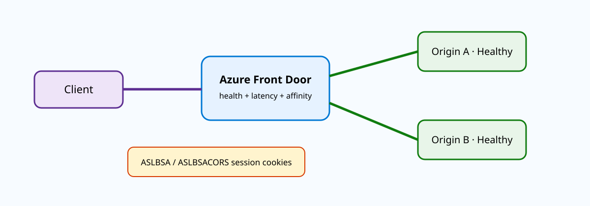
{kind=link}
Prerequisites and implementation
Design a health endpoint that represents real serving readiness. A static file that always returns 200 can leave Front Door sending traffic to an application whose database dependency is broken. Conversely, a probe that performs an expensive end-to-end transaction every few seconds can create unnecessary load. Use a lightweight endpoint that checks the dependencies required for safe traffic admission.
# Create/update an origin group with HTTPS HEAD probes.
az afd origin-group create \
--resource-group <rg> \
--profile-name <afd-profile> \
--origin-group-name <origin-group> \
--probe-request-type HEAD \
--probe-protocol Https \
--probe-path /healthz \
--probe-interval-in-seconds 30 \
--sample-size 4 \
--successful-samples-required 3
# Inspect current origin-group settings.
az afd origin-group show -g <rg> --profile-name <afd-profile> \
--origin-group-name <origin-group> -o jsoncSession affinity is configured at the appropriate Front Door Standard/Premium origin-group or route/domain surface supported by the current CLI/API. Enable it only for applications that actually require server-side session locality; stateless applications gain little and may distribute load less evenly.
Probe semantics and complete failure
The health path is case sensitive. A backend serving /HealthZ but probed at /healthz can be perfectly functional for customers yet permanently marked unhealthy. Front Door measures probe latency from immediately before the request is sent until the last response byte is received, and each probe uses a new TCP connection, so the metric is not biased by warm persistent connections.
The complete-health-failure behavior is especially important for incident response. If all origins fail probing because the health endpoint itself is misconfigured, Front Door can round-robin real user traffic across all of them. That means “every origin is red” is not equivalent to “Front Door has stopped sending requests.” In a brownout, inspect origin access logs before assuming traffic is absent.
Health-probe tuning without masking failures
The sample-size algorithm lets you trade detection speed for stability. With SampleSize 4 and SuccessfulSamplesRequired 3, one recent failure does not immediately evict an origin, but two failures in the four-sample window can. A smaller interval detects changes faster but generates more probes from distributed Front Door locations. Tune these values against the application’s failure characteristics rather than copying a universal template. An origin that needs sixty seconds to recover from deployment should not flap in and out every few seconds because its health endpoint transiently returns errors during startup.
Priority and weight apply after health eligibility, which is why changing a weight is not the correct response to a failing probe. Priority is useful for active/passive designs, while weight distributes among otherwise eligible origins at the same priority. Session affinity can then preserve a user’s selected origin, but it should not override health. For stateful applications, test what happens when the affinitized origin becomes unhealthy: the client must be able to establish state on another origin or the global routing layer has succeeded while the application experience still fails. Also monitor probe requests separately from customer requests in origin logs so synthetic health traffic does not distort business request metrics.
Verification
az afd origin-group show -g <rg> --profile-name <afd-profile> \
--origin-group-name <origin-group> \
--query "{probe:healthProbeSettings,lb:loadBalancingSettings}" -o jsonc
curl -I https://<origin-host>/healthzprobeRequestType: HEAD
probeProtocol: Https
probePath: /healthz
sampleSize: 4
successfulSamplesRequired: 3
HTTP/2 200
set-cookie: ASLBSA=...A 200 from the same host/path used by Front Door is the application-side proof. The affinity cookie on client requests confirms the feature is participating in session routing.
Troubleshooting
curl -I https://origin.example.com/healthz
HTTP/2 404
Front Door origin health: UnhealthyFix the case/path or application readiness endpoint; changing origin weight cannot make a failed probe healthy. If one user appears stuck to an origin while others move, inspect ASLBSA and whether session affinity is enabled. If every origin reports unhealthy, remember Front Door’s all-unhealthy fallback and verify real traffic distribution before concluding requests have stopped.
Traffic Manager Linked Records: flatten Azure DNS directly to Traffic Manager-selected endpoints
Why it matters
Traditional Traffic Manager integration commonly exposes a trafficmanager.net CNAME in the client’s DNS resolution path. Azure DNS alias records improved lifecycle management, but a CNAME-style alias still involves an intermediate name. Traffic Manager Linked Records introduce a tighter Azure DNS integration: the DNS record set references a Traffic Manager profile through a trafficManagementProfile property, Azure DNS resolves the profile internally, and the client receives the selected endpoint IP or FQDN directly. Microsoft calls this DNS flattening.
The design has three important consequences. First, clients do not need to see or resolve the shared trafficmanager.net namespace, which can simplify restrictive DNS/firewall policy. Second, Linked Records preserve DNSSEC compatibility because the intermediate unsigned Traffic Manager CNAME hop is not exposed. Third, the profile becomes strictly typed so endpoint types must match the record type—A for IPv4 endpoints, AAAA for IPv6, or CNAME for FQDN targets.
Architecture
A client queries a record such as app.contoso.com A in an Azure DNS zone. Azure DNS sees that the record is linked to a Traffic Manager profile. Traffic Manager evaluates endpoint health and the configured routing method, then Azure DNS returns the chosen endpoint’s IPv4 address directly. The client does not receive myprofile.trafficmanager.net and does not perform a second lookup for that intermediate name.
Linked Records work at the zone apex, where normal DNS rules prohibit a CNAME. That makes them attractive for contoso.com itself. The record’s TTL is inherited from the Traffic Manager profile’s DNS configuration; Azure DNS ignores an independently configured record-set TTL. That keeps cache behavior aligned with Traffic Manager health/failover timing.
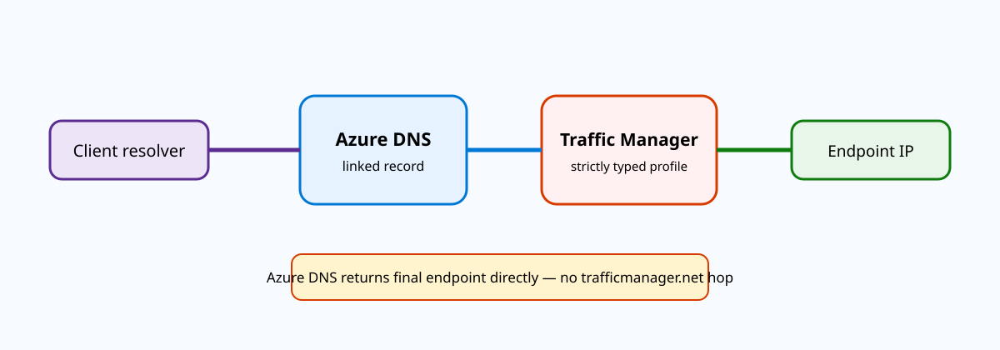
{kind=link}
Prerequisites and implementation
Because the feature is preview, use current Microsoft guidance and validate subscription/region/API support before production adoption. Register the Microsoft.Network provider in every subscription that participates when the DNS zone and Traffic Manager profile are separated. Build a Traffic Manager profile whose strict record type matches the linked DNS record.
az provider register --namespace Microsoft.Network
# Create the Traffic Manager profile and endpoints with the current
# Azure CLI/ARM surface, selecting the record type required by the preview.
az network traffic-manager profile show \
-g <rg> -n <tm-profile> -o jsonc
# Microsoft documents the Linked Record creation through the current
# Azure DNS preview surface. Do not substitute a legacy alias targetResource
# if the goal is a true trafficManagementProfile Linked Record.The current portal tutorial is the clearest fully documented end-to-end creation path. If the installed CLI version exposes the preview Linked Record fields, use those exact parameters; otherwise deploy through the current ARM/PowerShell preview interface and keep Azure CLI for Traffic Manager and DNS verification. The key validation is that the resulting record set is a Linked Record, not a legacy Traffic Manager alias.
Strict typing and lifecycle
Once a Traffic Manager profile is assigned a strict type for Linked Records, endpoint consistency is enforced. An A-type profile requires IPv4-compatible endpoints. This moves a class of configuration mistakes from runtime DNS behavior to control-plane validation. Microsoft also blocks deletion of a Traffic Manager profile while Linked Records reference it, which reduces the risk of leaving a broken DNS object pointing at a vanished traffic-management resource.
A profile can have up to 50 linked records according to current documentation. DNS queries to the linked record count toward Traffic Manager billing. These are architectural limits worth documenting when one central profile serves many application names or tenant zones.
DNSSEC, apex records, and failover timing
Linked Records are especially interesting at the DNS zone apex. DNS protocol rules do not permit an ordinary CNAME at the apex because it would conflict with SOA and NS records. A Linked Record can expose Traffic Manager selection there without returning a client-visible CNAME, so an organization can use its bare domain while retaining health-based endpoint selection. The same flattening makes the integration compatible with DNSSEC validation: the Azure DNS zone signs the answer it serves rather than sending the validator through an unsigned Traffic Manager CNAME hop.
Failover timing still depends on two clocks: Traffic Manager endpoint health detection and recursive/client DNS caching. A 30-second profile TTL does not mean traffic moves exactly thirty seconds after a backend fails. The monitor must first decide that the endpoint is degraded, then cached answers must age out. Test with a resolver that exposes TTLs and query repeatedly through a controlled endpoint failure. Also consider strict typing during migrations. If an A-linked profile is serving IPv4 addresses, adding a hostname-only or IPv6-only endpoint is a schema/design problem, not merely another endpoint. Build separate profiles/records where address families or target types differ, and remember the current preview limit of 50 linked records per profile when centralizing many application names.
Verification
az network traffic-manager endpoint list -g <rg> \
--profile-name <tm-profile> -o table
dig +dnssec <linked-name.contoso.com> ATraffic Manager endpoints:
primary Online priority 1
secondary Online priority 2
DNS answer:
app.contoso.com. 30 IN A 203.0.113.10
(no trafficmanager.net CNAME in ANSWER)For a DNSSEC-signed zone, validate the authenticated response with a validating resolver. During a failover test, make the primary unhealthy and verify the direct A/AAAA/CNAME answer changes after health and TTL timing.
Troubleshooting
dig app.contoso.com
app.contoso.com. CNAME myprofile.trafficmanager.net.
...This is not behaving as a Linked Record; it is a conventional CNAME/legacy alias path. Inspect the DNS record-set resource and confirm the preview trafficManagementProfile linkage. If creation fails with endpoint-type validation, align the profile’s Strictly Typed Profile setting and endpoint targets with the DNS record type instead of trying to mix IPv4, IPv6, and FQDN endpoint semantics.
Private Endpoint network policies: make NSGs and UDRs participate in Private Link traffic
Why it matters
A Private Endpoint injects a private IP into your VNet for access to a supported service. By default, Azure disables private-endpoint network policies on the subnet, which means engineers who attach an NSG or route table can be surprised that the normal policy expectations do not apply to Private Endpoint traffic. Azure supports enabling those policies so NSGs and/or UDRs can participate. This is the foundation for designs that need to inspect, segment, or explicitly control Private Endpoint traffic rather than treating it as an automatic direct path.
The routing detail is especially important. Private Endpoint routing normally injects a highly specific /32 path to the endpoint. A broad 0.0.0.0/0 UDR to a firewall does not override that /32 because longest-prefix match wins. When network-policy support for routing is enabled, Microsoft allows a custom route whose prefix length is at least as specific as required relative to the VNet address space so that the intended UDR can take precedence. Designing the right prefix is therefore part of the security architecture.
Architecture
Consider a client subnet, a central firewall at 10.0.1.4, and a Private Endpoint at 10.50.2.4. Without Private Endpoint route-policy support, the platform path to 10.50.2.4 wins and the client can bypass the firewall even if a default route points to the NVA. After enabling Private Endpoint network policies on the endpoint subnet and adding an eligible UDR, the route table can steer the flow through the firewall before it reaches the Private Endpoint.
NSG behavior is similarly opt-in for Private Endpoint traffic. You can enable both network security group and route-table policies, or use the more selective states through PowerShell/ARM. Azure CLI currently exposes the private-endpoint policy toggle as a boolean rather than the selective per-policy values, so if you need only NSG or only route-table enforcement, use the documented PowerShell/ARM property rather than inventing unsupported CLI flags.
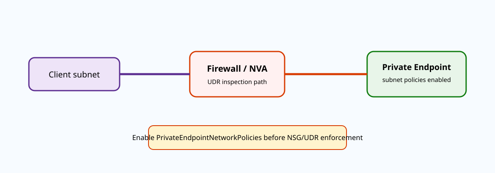
{kind=link}
Prerequisites and implementation
Document the VNet address space, endpoint subnet, endpoint IP, and desired NVA next hop. Confirm that the return path from the service/Private Endpoint design is compatible with stateful inspection. Enabling a forward UDR without considering return-path behavior can create asymmetric sessions.
# Enable both NSG and route-table network policies for Private Endpoints
# in this subnet. Note the inverted CLI parameter name.
az network vnet subnet update \
--resource-group <rg> \
--vnet-name <vnet> \
--name <private-endpoint-subnet> \
--disable-private-endpoint-network-policies false
# Create an inspection route table.
az network route-table create -g <rg> -n <pe-inspection-rt> -l <region>
az network route-table route create \
-g <rg> --route-table-name <pe-inspection-rt> \
-n inspect-private-endpoint \
--address-prefix <eligible-specific-prefix> \
--next-hop-type VirtualAppliance \
--next-hop-ip-address <firewall-private-ip>
az network vnet subnet update -g <rg> --vnet-name <vnet> \
-n <client-or-endpoint-subnet-as-designed> \
--route-table <pe-inspection-rt>Do not blindly use 0.0.0.0/0 and expect it to beat the Private Endpoint /32. Use Microsoft’s documented prefix-length rule and validate the effective route for the exact destination endpoint IP.
Route specificity, SNAT, and inspection symmetry
Private Endpoint inspection often requires more than steering the forward packet through a firewall. The service-side return behavior and the firewall’s state table must see a coherent session. Microsoft recommends SNAT in several Azure Firewall Private Link inspection patterns because it makes the return traffic reliably target the firewall rather than trying to reach the original client through a path that can bypass the inspection point. Application rules in Azure Firewall perform SNAT for this scenario; when network rules are used, review the documented SNAT private-range configuration so the return path remains symmetric.
Choose the inspection UDR based on the Private Endpoint VNet’s address space, not on intuition that “more specific is always /32.” Microsoft’s network-policy documentation allows UDR override when the route prefix meets the required specificity relative to the VNet address space. Grouping endpoints into a dedicated subnet can therefore make operations simpler: one route for that endpoint subnet can steer several endpoints through the appliance, rather than maintaining a /32 per endpoint. Validate each destination with the client NIC effective route table after any endpoint or subnet change.
NSG enforcement is a separate decision. Once Private Endpoint network policies are enabled, NSG rules can deny traffic that previously bypassed those policies. Stage this change with explicit allows for legitimate client networks before enabling enforcement in a production endpoint subnet. If a route change and an NSG change are applied together, a timeout becomes ambiguous; changing one control at a time makes the expected failure evidence much easier to interpret.
Verification
az network vnet subnet show -g <rg> --vnet-name <vnet> \
-n <private-endpoint-subnet> \
--query "privateEndpointNetworkPolicies" -o tsv
az network nic show-effective-route-table -g <client-rg> -n <client-nic> -o tablePrivateEndpointNetworkPolicies: Enabled
Destination Source Next Hop Type Next Hop IP
10.50.2.0/24 User VirtualAppliance 10.0.1.4Then generate traffic to 10.50.2.4 and confirm a corresponding session/log on the firewall. An effective route without observed traffic can still indicate an application, DNS, or security-rule issue.
Troubleshooting
UDR: 0.0.0.0/0 -> VirtualAppliance 10.0.1.4
Effective route to 10.50.2.4 -> PrivateEndpoint /32
Firewall logs: no sessionThe default route is less specific, so the Private Endpoint path wins. Enable the required network policies and use an eligible more-specific UDR according to the VNet-prefix rule. If routing is correct but traffic is denied, inspect the NSG effective rules now that Private Endpoint NSG enforcement is enabled.
Azure Firewall IP Groups: separate address ownership from firewall rule logic
Why it matters
Firewall policies become difficult to maintain when the same branch, partner, management, and application address ranges are copied into many rules. IP Groups turn those address sets into first-class Azure resources that can be referenced by Azure Firewall rules. A single group can contain individual IPv4 addresses, CIDRs, and ranges. You can then reuse the group as a DNAT source, a network-rule source or destination, or an application-rule source.
The architectural gain is not merely shorter rules. It separates two change domains: “which addresses belong to Branches?” and “what may Branches access?” An automation pipeline can update the Branches group without editing every rule collection that references it. That reduces policy drift and makes change review easier because an IP-membership change is distinct from a security-policy change.
Architecture
IP Groups are regional Azure resources but can be reused by firewall configurations across regions and subscriptions where permissions and references permit. Firewall Policy or classic Azure Firewall rules hold references to those group resources. During packet evaluation, the group expands logically to its member addresses; there is no extra network hop and no packet lookup to an external directory service.
Microsoft’s current implementation supports parallel updates of up to 20 IP Groups at a time. If one update fails, that group can enter Failed while others succeed. Importantly, the firewall can remain healthy and show Succeeded; therefore automation must inspect the IP Group resources themselves rather than using firewall health as proof that every group update completed.
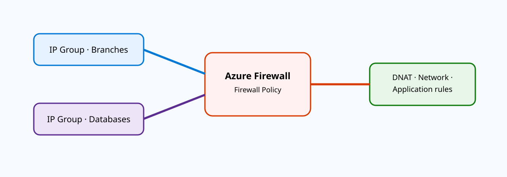
{kind=link}
Prerequisites and implementation
Choose group boundaries that correspond to ownership or policy meaning, not arbitrary subnet size. Examples include branch-sites, payment-backends, and admin-jump-hosts. Avoid a single giant “all corporate IPs” group if different teams change different portions of it or rules need different semantics.
az network ip-group create \
--name branch-sites \
--resource-group <security-rg> \
--location <region> \
--ip-addresses '10.10.0.0/16' '10.20.0.0/16' '192.168.50.10'
az network ip-group show -g <security-rg> -n branch-sites -o jsonc
# Update membership without rewriting every referencing firewall rule.
az network ip-group update \
--resource-group <security-rg> \
--name branch-sites \
--add ipAddresses '10.30.0.0/16'When you build Firewall Policy rule collections, use the IP Group resource as the source/destination group according to the current rule-collection CLI/ARM schema. Keep the group in IaC so membership changes are reviewed and reversible.
Empty-group behavior and safe automation
One subtle failure mode deserves explicit monitoring: if an IP Group remains referenced by a rule but all addresses are removed from the group, Microsoft documents that the rule is skipped. That can be safer than accidentally matching everything, but it can also silently remove intended access or protection. Pipelines should reject empty production groups unless “empty means disable this rule” is an intentional design.
Before deleting a group, remove its references from firewall resources. Azure tracks associations, and deletion of an in-use group is not a clean substitute for changing rule intent. For large batch updates, record the pre-change membership of each group so a partial failure can be rolled back deterministically.
Group design, CI/CD, and blast radius
Because one IP Group can be referenced by many firewall rules, its blast radius can be larger than the apparent one-line address change. Before adding a new prefix, search the firewall policy for every rule collection that consumes the group and classify the effect. Adding 10.30.0.0/16 to a source group used by both an HTTPS allow rule and an administrative SSH rule may unintentionally grant the new site both capabilities. If memberships have different trust levels, split the group rather than relying on rule authors to remember every downstream reference.
For CI/CD, validate addresses before calling Azure: reject invalid CIDRs, normalize duplicates, and enforce an upper bound appropriate to your organization. Then update groups in controlled batches and query each group’s provisioningState afterward. Microsoft allows up to 20 parallel IP Group updates, but parallelism should not prevent deterministic rollback. Store the previous membership in the pipeline artifact or source control so a failed change can restore exactly the old set.
IP Groups can also improve audit readability. A rule that says source branch-sites to destination payment-backends communicates intent more clearly than forty raw prefixes. Keep names semantic and avoid embedding environment-specific addresses in the name itself. When application ownership changes, the group membership can move without forcing a firewall-rule rename, which keeps historical policy reviews understandable.
Verification
az network ip-group show -g <security-rg> -n branch-sites \
--query "{state:provisioningState,addresses:ipAddresses}" -o json
az network ip-group list -g <security-rg> \
--query "[].{name:name,state:provisioningState,count:length(ipAddresses)}" -o table{
"state": "Succeeded",
"addresses": ["10.10.0.0/16","10.20.0.0/16","10.30.0.0/16","192.168.50.10"]
}Then generate one allowed and one denied test flow and confirm Firewall logs identify the expected rule. Group provisioning alone does not prove the firewall rule reference or policy behavior.
Troubleshooting
branch-sites Succeeded 4
payment-backends Failed 12
admin-jump-hosts Succeeded 3
Azure Firewall SucceededDo not treat the firewall’s Succeeded state as proof that all group updates succeeded. Investigate payment-backends directly, validate address formatting/duplicates/permissions, and retry only that failed resource. If traffic suddenly stops matching a referenced rule, check whether the group became empty and caused Azure Firewall to skip the rule.
Public IP routing preference: choose Microsoft backbone or earlier ISP handoff
Why it matters
Azure’s default Internet path uses the Microsoft global network for as much of the journey as practical. Ingress traffic typically enters Microsoft close to the user and traverses Microsoft’s backbone to the Azure region; egress similarly stays on the backbone and exits close to the destination. Azure routing preference offers an alternate Internet option that minimizes travel on Microsoft’s network and hands traffic to transit ISPs closer to the workload region. Microsoft describes the two models as cold-potato routing and hot-potato routing.
This is an economic/performance path-selection feature, not a UDR. You choose the preference when creating the public IP resource. The selection influences how Internet traffic reaches or leaves resources associated with that public IP, while Azure-to-Azure traffic still uses Microsoft’s WAN. The Internet preference can lower egress cost, but path performance and consistency depend more heavily on the public Internet.
Architecture
With the Microsoft Network preference, a remote user can enter Microsoft’s backbone at an edge close to the user, traverse the backbone, and reach the Azure region. With Internet routing preference, the user’s traffic remains on ISP networks longer and enters Microsoft closer to the hosted region. Egress is the mirror image: Microsoft-network routing carries traffic across the backbone toward the user before handing off; Internet preference hands off near the workload region.
The setting is attached to a Standard public IPv4 address through an IP tag. It can then be associated with supported services such as VMs, VM scale sets, AKS, NIC-based public Load Balancers, Application Gateway, and Azure Firewall. Current documentation says Internet routing preference is not supported with NAT Gateway or IP-based public Load Balancers, and it does not support IPv6.
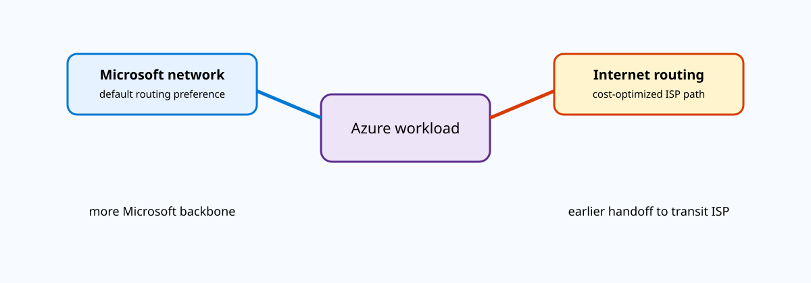
{kind=link}
Prerequisites and implementation
Make the routing decision before you create the public IP because Microsoft documents that you cannot change the routing preference afterward. Internet preference requires a zone-redundant Standard public IPv4 address in a supported region. If the application may later need NAT Gateway or IPv6, that limitation can outweigh the egress-cost benefit.
# Internet routing preference (hot potato)
az network public-ip create \
--name <internet-routed-pip> \
--resource-group <rg> \
--location <region> \
--ip-tags 'RoutingPreference=Internet' \
--sku Standard \
--allocation-method static \
--version IPv4 \
--zone 1 2 3
# Default Microsoft-global-network preference: omit the Internet routing tag.
az network public-ip create \
--name <microsoft-network-pip> \
--resource-group <rg> \
--location <region> \
--sku Standard \
--allocation-method static \
--version IPv4Associate the selected public IP with the supported Azure resource using that service’s normal frontend/NIC configuration. Do not attempt to toggle the preference by adding or removing the tag on an already-created IP; create the correct replacement public IP and plan the service cutover.
When the path choice matters
Latency-sensitive global applications usually favor the Microsoft network because backbone routing gives Microsoft more control over end-to-end traffic engineering. Cost-sensitive bulk transfer may prefer Internet routing when the application can tolerate ordinary transit-ISP path variability. The correct choice depends on measured user geography and workload traffic patterns, not a blanket statement that one path is “better.”
DNS can also affect what users actually test. When comparing two public endpoints, keep DNS TTL, application origin, TLS, and regional placement constant. Otherwise a test that appears to compare routing preference might actually compare different services or caches.
Measurement methodology and service compatibility
Routing preference should be evaluated with measurements from the networks that actually matter to the application. Run traceroute or equivalent path tests and latency measurements from representative user ISPs in each geography, and repeat them over time because public-Internet routing changes. Compare the two preferences using endpoints in the same Azure region and with equivalent application stacks. If one test uses a cached CDN path and another hits an uncached VM, the result says little about backbone versus transit routing.
The immutable nature of the public-IP setting means migration planning matters. For a production frontend, create a second compatible public IP with the desired preference, attach it through the service’s supported change process, update DNS where necessary, and preserve the old address through its TTL/rollback period. Do not delete the old address first and discover afterward that the target service does not support the Internet preference. Check the current compatibility matrix before design approval: Internet routing preference is IPv4 only and has exclusions such as NAT Gateway and IP-based public Load Balancer scenarios.
Security controls remain independent. Both preferences still use public Internet addresses, so NSGs, Azure Firewall/WAF, DDoS protections, and application TLS requirements do not disappear. The feature selects the transit path economics and performance boundary; it does not turn a public endpoint into private connectivity or change the application’s exposure model.
Verification
az network public-ip show -g <rg> -n <internet-routed-pip> \
--query "{ip:ipAddress,sku:sku.name,zones:zones,ipTags:ipTags}" -o json{
"ip": "203.0.113.40",
"sku": "Standard",
"zones": ["1","2","3"],
"ipTags": [{"ipTagType":"RoutingPreference","tag":"Internet"}]
}Then measure traceroute/latency from representative user networks. The resource metadata proves the intended control-plane selection; external path measurements show the operational consequence.
Troubleshooting
Public IP exists
sku: Standard
ipTags: []
The address uses the default Microsoft network preference. If the requirement was Internet routing, recreate a compatible public IP with the RoutingPreference=Internet tag and migrate the frontend. If a service association rejects an Internet-routed IP, check the documented support matrix—especially NAT Gateway, IPv6, and IP-based Load Balancer limitations—before treating it as an RBAC or syntax problem.
Standard Load Balancer TCP reset and idle timeout: make long-lived connection behavior explicit
Why it matters
Many applications keep TCP connections open for long periods with little traffic: database pools, SSH/RDP sessions, message brokers, APIs using connection reuse, or custom protocols. Azure Load Balancer tracks flow state, and an idle connection can age out. If the application assumes the connection remains valid indefinitely, the next packet can encounter a stale path and produce confusing timeouts. Standard Load Balancer lets you tune the idle timeout and optionally send TCP resets so endpoints receive an explicit connection-closed signal instead of a silent drop.
As of Microsoft’s August 19, 2026 update, load-balancing rules and inbound NAT rules support idle timeouts from 4 to 100 minutes. Outbound rules support 4 to 120 minutes. The default is 4 minutes. Those values are properties of the relevant rule, not a global setting for every connection on the load balancer.
Architecture
A client establishes a TCP flow through the Standard Load Balancer to a backend. The load balancer creates flow state that maps the frontend tuple to the selected backend. Traffic refreshes that state. If no traffic crosses the flow for longer than the configured idle timeout, Azure no longer guarantees the connection state. With TCP reset enabled, subsequent packets can receive an RST that tells the client stack immediately that the old connection is gone. Without reset, the packets can be silently discarded, leaving the application to wait for its own retransmission and timeout logic.
This setting does not create application-layer heartbeats. A proxy or application server elsewhere in the path may have a shorter timeout. TCP keepalives or application keepalives can still be necessary, especially when multiple stateful devices sit between endpoints. Tune the entire chain rather than assuming the largest Azure timeout determines the session lifetime.
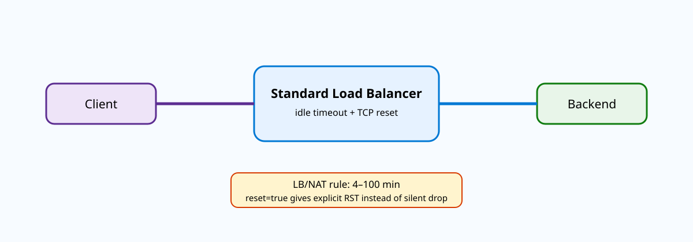
{kind=link}
Prerequisites and implementation
Identify the exact rule type carrying the connection. An inbound load-balancing rule, inbound NAT rule, and outbound rule can have different timeout ranges. Measure the application’s normal idle intervals before raising the value. A 60-minute idle timeout for an API that should never be idle longer than 30 seconds might mask broken connection management and increase stale state unnecessarily.
# Update one named load-balancing rule.
az network lb rule update \
--resource-group <rg> \
--lb-name <standard-lb> \
--name <lb-rule> \
--idle-timeout 15 \
--enable-tcp-reset true
# Verify the exact saved rule rather than assuming index 0.
az network lb rule show \
--resource-group <rg> \
--lb-name <standard-lb> \
--name <lb-rule> \
--query "{name:name,idleTimeoutInMinutes:idleTimeoutInMinutes,enableTcpReset:enableTcpReset,protocol:protocol}" -o jsonFor outbound rules, configure the equivalent supported idle-timeout/TCP-reset properties on the outbound rule. Do not copy a 100-minute inbound maximum into an outbound design without checking the outbound rule’s current documented range.
Keepalive design
If you must preserve an otherwise idle flow, send keepalives more frequently than the smallest stateful timeout in the path. TCP keepalive can work when intermediate devices honor it as traffic, while application-layer keepalives are often safer across proxies that terminate and recreate TCP sessions. Keepalive frequency also has scale cost: millions of connections sending heartbeats too frequently can create unnecessary traffic and backend work.
TCP reset changes failure visibility. With reset disabled, the next packet after state expiry can disappear and the client waits through retransmission timers. With reset enabled, the client gets an immediate RST and can establish a new connection sooner. That improves recovery for many applications, but verify that the application handles RST cleanly rather than surfacing an unhandled error.
Application behavior, SNAT, and observability
Idle timeout is easiest to diagnose with a reproducible application timeline. Open a TCP connection, verify bidirectional data, leave it silent for longer than the configured threshold, then send one more packet while capturing both endpoints. With TCP reset enabled, the expected evidence is an RST that closes the stale connection and lets the application reconnect immediately. Without reset, the first post-idle packet can disappear and the client may spend seconds or minutes retransmitting before its own socket timeout fires. That difference is visible in packet capture even when the application logs only a generic connection exception.
Outbound rules add another consideration: SNAT port state. A large population of idle outbound connections consumes translation state until the timeout expires. Raising an outbound idle timeout can therefore increase the duration that SNAT mappings remain occupied. Capacity planning should consider both user experience and port consumption, especially for large VM pools talking to a small set of external destinations. Keepalive traffic can preserve a needed session, but it also keeps the corresponding state alive and generates packets across every stateful device in the path.
Finally, identify the shortest timeout in the entire chain. Application Gateway, firewalls, proxies, Private Link components, operating systems, and remote servers can each expire state independently. If a connection consistently dies at five minutes while the Load Balancer is configured for fifteen, the Load Balancer is unlikely to be the active timer. Use packet timing and device logs to locate the component that actually sends the reset or begins silently dropping the flow.
Verification
az network lb rule show -g <rg> --lb-name <standard-lb> -n <lb-rule> \
--query "{idle:idleTimeoutInMinutes,reset:enableTcpReset}" -o json{
"idle": 15,
"reset": true
}
Test connection:
active traffic before 15 min -> session remains usable
idle beyond threshold -> next packet receives TCP RST, client reconnectsUse packet capture at the client/backend during a controlled idle test to prove the RST behavior rather than relying only on an application exception.
Troubleshooting
idleTimeoutInMinutes: 4
enableTcpReset: false
Application log after 6 minutes idle:
"connection expected to be kept alive was closed / request timed out"If the application expects longer idle periods, either increase the rule timeout within the supported range, enable TCP reset for clearer failure signaling, or implement keepalives below the effective path timeout. If Azure is configured for 30 minutes but flows still die at 5 minutes, look for a proxy, firewall, application server, or Private Link component with a shorter timeout; the Load Balancer setting cannot override state aging elsewhere.
Daily mastery quiz
Distribution: 15 Hybrid connectivity and architecture · 13 Core networking infrastructure · 10 Routing and traffic management · 12 Security, monitoring, and private service access.